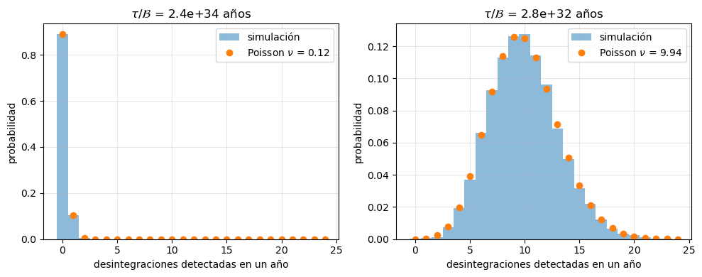
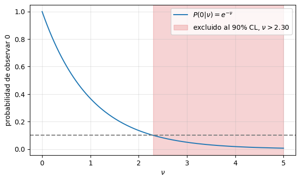
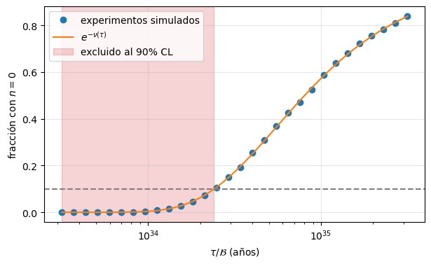

¿Se desintegra el protón?#
Boletín guiado (versión simple): el límite de Super-Kamiokande a \(p \to e^+ + \pi^0\)#
Jose A. Hernando
Departamento de Física de Partículas. Universidade de Santiago de Compostela
# Configuración e imports
%matplotlib inline
%reload_ext autoreload
%autoreload 2
import numpy as np
import matplotlib.pyplot as plt
import scipy.constants as units
from scipy.stats import poisson, binom
import sys; sys.path.append('..') # fnyp está en notebooks/
try:
from fnyp import common as fn
except ModuleNotFoundError: # en Google Colab hay que traerse antes el repositorio
!git clone -q https://github.com/jahernando/USC-FNyP.git
import sys; sys.path.append('USC-FNyP/notebooks')
from fnyp import common as fn
fn.version()
Last version Thu Oct 8 13:39:04 2026
Objetivos#
Leer el abstract de un artículo de búsqueda y extraer los números relevantes.
Identificar los blancos y contarlos: los protones de Super-Kamiokande (SK).
Entender la exposición: \(N_0\) protones durante \(T\) años equivalen a \(T N_0\) protones durante un año.
Estimar el número de desintegraciones esperadas cuando \(\tau \gg t\).
Entender que, con pocos sucesos, el número observado sigue una distribución de Poisson.
Si no se observa nada, fijar un límite al 90% de nivel de confianza (CL) y comprobar qué significa con experimentos simulados.
Ver que con fondo las cosas se complican.
El problema#
En el Modelo Estándar el número bariónico \(B\) se conserva, esto implica que el protón no se desintegra, es el barión más ligero.
Las teorías de Gran Unificación (GUT) sitúan quarks y leptones en los mismos multipletes, y predicen que el protón se desintegra, esto es violan la conservación del número bariónico, con vidas medias del orden de \(10^{34}\)–\(10^{36}\) años.
El canal favorito de muchas GUT es:
SK no mide la vida media total del protón \(\tau\), sino la vida media parcial \(\tau/\mathcal{B}\) del canal que busca, donde \(\mathcal{B}\) es su fracción de desintegración.
Super-Kamiokande#
|
Super-Kamiokande a) dibujo del detector b) principio de detección [SK, MT13.2] |

Tanque cilíndrico de agua ultrapura: 50 kt, 11 k PMTs, a 1000 m bajo la montaña Ikenoyama (Japón).
Toma datos desde 1996. Su sucesor, Hyper-Kamiokande (HK), 260 kt, con participación de la USC.
El artículo#
Super-Kamiokande Collaboration, Search for proton decay via \(p\to e^+\pi^0\) and \(p\to \mu^+\pi^0\) with an enlarged fiducial volume in Super-Kamiokande I-IV, Phys. Rev. D 102, 112011 (2020), arXiv:2010.16098
We have searched for proton decay via \(p\to e^+\pi^0\) and \(p\to \mu^+\pi^0\) modes with the enlarged fiducial volume data of Super-Kamiokande from April 1996 to May 2018, which corresponds to 450 kton\(\cdot\mathrm{years}\) exposure. We have accumulated about 25% more livetime and enlarged the fiducial volume of the Super-Kamiokande detector from 22.5 kton to 27.2 kton for this analysis, so that 144 kton\(\cdot\mathrm{years}\) of data, including 78 kton\(\cdot\mathrm{years}\) of additional fiducial volume data, has been newly analyzed. No candidates have been found for \(p\to e^+\pi^0\) and one candidate remains for \(p\to \mu^+\pi^0\) in the conventional 22.5 kton fiducial volume and it is consistent with the atmospheric neutrino background prediction. We set lower limits on the partial lifetime for each of these modes: \(\tau/Br(p\to e^+\pi^0) > 2.4 \times 10^{34}\) years and \(\tau/Br(p\to \mu^+\pi^0) > 1.6 \times 10^{34}\) years at 90% confidence level.
[>] Taller — Leer un *abstract*
Lee solo el abstract y responde:
¿Qué canales se buscan? ¿Cuántos años de datos?
¿Qué es la exposición? ¿Por qué se da en kt·año y no en años?
¿Qué es el volumen fiducial? ¿Por qué es menor que los 50 kt del tanque?
¿Qué resultado se da? ¿Es una medida o un límite?
¿Cómo se compara \(2.4 \times 10^{34}\) años con la edad del Universo, \(1.38 \times 10^{10}\) años?
Solución
\(p\to e^+\pi^0\) y \(p\to\mu^+\pi^0\). Datos de abril 1996 a mayo 2018: 22 años de calendario (con paradas).
Exposición = masa × tiempo de toma de datos. Lo que cuenta es el número de protones·año observados: 10 kt durante 1 año equivalen a 1 kt durante 10 años.
Volumen interior, alejado de las paredes, donde se aceptan los sucesos. Cerca de las paredes la reconstrucción es peor y entra más fondo (radiactividad de la roca y de los PMTs, muones cósmicos). Es un compromiso entre masa y limpieza: la novedad del artículo es ampliarlo de 22.5 a 27.2 kt.
No hay señal: un límite inferior a la vida media parcial al 90% CL.
\(2.4 \times 10^{34} / 1.38 \times 10^{10} \approx 1.7 \times 10^{24}\) veces la edad del Universo. ¡Y aun así se puede medir! El truco: muchísimos protones.
tau_lim = 2.4e34 # años, tau/Br(p -> e+ pi0) al 90% CL [SK 2020]
t_U = 1.38e10 # años, edad del Universo
print('tau/Br / edad del Universo = {:.1e}'.format(tau_lim / t_U))
tau/Br / edad del Universo = 1.7e+24
Los blancos#
[>] Taller — Los blancos
En una búsqueda de desintegraciones, los blancos son las partículas que podrían desintegrarse.
Masa molar del agua \(M_A = 18.015\) g/mol; \(N_A = 6.022 \times 10^{23}\) \(\mathrm{mol}^{-1}\).
¿Cuáles son los blancos en SK?
¿Cuántos hay en 1 kt de agua? ¿Y en el volumen fiducial de 22.5 kt?
N_A = units.N_A # 1/mol
M_A = 18.015 # g/mol, agua
kt = 1e9 # g
n_mol = kt / M_A * N_A # moléculas de H2O por kt
p_total = 10 * n_mol # protones por kt: 2 del H y 8 del O
N0 = 22.5 * p_total # protones en el volumen fiducial
print('moléculas / kt = {:.2e}'.format(n_mol))
print('protones / kt = {:.2e}'.format(p_total))
print('protones en 22.5 kt = {:.2e}'.format(N0))
moléculas / kt = 3.34e+31
protones / kt = 3.34e+32
protones en 22.5 kt = 7.52e+33
Solución
Los protones del agua: 2 libres (H) y 8 ligados en el \(^{16}\mathrm{O}\) por molécula. SK usa los 10.
\(3.34 \times 10^{31}\) moléculas y \(3.34 \times 10^{32}\) protones por kt. En 22.5 kt, \(N_0 = 7.52 \times 10^{33}\) protones.
La exposición#
SK resume sus datos en una exposición de 450 kt·año.
Para vidas medias muy largas (\(\tau \gg t\)), observar \(N_0\) protones durante \(T\) años es lo mismo que observar \(T\,N_0\) protones durante un año: solo importa el producto \(N_0\,T\), la exposición.
[>] Taller — La exposición
Si todos los datos se hubieran tomado con el volumen fiducial de 22.5 kt, ¿cuántos años de toma de datos serían? ¿Y con 1 kt?
exposicion = 450 * p_total # protones x año
print('años con 22.5 kt = {:.0f}'.format(450 / 22.5))
print('años con 1 kt = {:.0f}'.format(450 / 1))
print('exposición = {:.2e} protones año'.format(exposicion))
años con 22.5 kt = 20
años con 1 kt = 450
exposición = 1.50e+35 protones año
Solución
\(450/22.5 = 20\) años. Con 1 kt, 450 años. (En realidad, SK combina periodos con 22.5 y 27.2 kt.)
En protones: \(450 \times 3.34 \times 10^{32} = 1.50 \times 10^{35}\) protones·año.
¿Cuántas desintegraciones esperamos?#
[>] Taller — Desintegraciones esperadas
Supón que \(\tau/\mathcal{B}\) es justo el límite de SK, \(2.4 \times 10^{34}\) años. La eficiencia de selección de SK (fracción de desintegraciones que detecta) es \(\varepsilon = 0.37\).
Con \(N_0\) protones, ¿cuántos quedan tras un tiempo \(t\)? Demuestra que, si \(t \ll \tau\), el número medio de desintegraciones es \(N_0\,t/\tau\).
¿Cuántas desintegraciones esperas detectar en un año en el volumen fiducial de 22.5 kt? ¿Y con la exposición de 450 kt·año?
¿Qué masa de agua necesitas para detectar, en promedio, una desintegración al año?
eps = 0.37 # eficiencia de SK para p -> e+ pi0
tau = tau_lim # SK limite on tau (años)
print('nu en 1 año (22.5 kt) = {:.2f}'.format(eps * N0 * 1 / tau))
print('nu con 450 kt año = {:.2f}'.format(eps * exposicion / tau))
print('masa para nu = 1 al año = {:.0f} kt'.format(tau / (eps * p_total)))
nu en 1 año (22.5 kt) = 0.12
nu con 450 kt año = 2.32
masa para nu = 1 al año = 194 kt
Solución
\(N(t) = N_0\,e^{-t/\tau} \simeq N_0\,(1 - t/\tau)\), luego se desintegran \(N_0 - N(t) \simeq N_0\,t/\tau\).
SK detecta, en promedio, \(\nu = \varepsilon N_0\,t/\tau\): \(\nu = 0.12\) en un año. Con la exposición total, \(\nu = 2.3\). SK no ha visto ninguna: lo veremos en el Taller No vemos nada.
\(\approx 190\) kt, como el volumen fiducial de Hyper-Kamiokande (187 kt).
El número de desintegraciones en un canal viene dado por \(N_i = \mathcal{B} \, N_0\,t/\tau = N_0\,t \, (\mathcal{B}/\tau)\). SK pone el límite en realidad en \(\mathcal{B}/\tau\), dado que no pueden separar los dos factores \(\mathcal{B}, \tau\) a partir de sus datos.
La distribución de Poisson#
Cada protón es un «intento» con una probabilidad minúscula de desintegrarse en el tiempo \(t\):
El número de desintegraciones entre \(N_0 \sim 10^{34}\) protones sigue una binomial \(B(n \,|\, N_0, p)\).
Cuando \(N_0 \to \infty\), \(p \to 0\) con \(\nu = N_0 p\) fijo, la binomial tiende a la Poisson:
Solo depende de \(\nu\): da igual cuántos protones y cuánto tiempo, solo importa el número medio.
[>] Taller — Pocos sucesos
Demuestra que, si \(N_0 \to \infty\) y \(p \to 0\) con \(\nu = N_0 p\) fijo, la binomial tiende a la Poisson.
Simula el número de desintegraciones detectadas en 10000 «años» de SK (22.5 kt) para \(\tau/\mathcal{B} = 2.4 \times 10^{34}\) años y para \(\tau/\mathcal{B} = 2.8 \times 10^{32}\) años. Compara los histogramas con la Poisson. ¿Cuál es el resultado más probable en cada caso? ¿Con qué probabilidad no se ve nada?
rng = np.random.default_rng()
n_años = 10000
fig, axs = plt.subplots(1, 2, figsize=(10, 4))
for ax, tau_i in zip(axs, (2.4e34, 2.8e32)):
nu_i = eps * N0 * 1 / tau_i
cuentas = rng.poisson(nu_i, size=n_años) # un número por cada 'año' simulado
ns = np.arange(0, 25)
ax.hist(cuentas, bins=ns - 0.5, density=True, alpha=0.5, label='simulación')
ax.plot(ns, poisson.pmf(ns, nu_i), 'o', label=r'Poisson $\nu$ = {:.2f}'.format(nu_i))
ax.set_xlabel('desintegraciones detectadas en un año'); ax.set_ylabel('probabilidad')
ax.set_title(r'$\tau/\mathcal{{B}}$ = {:.1e} años'.format(tau_i))
ax.grid(alpha=0.3); ax.legend()
print('nu = {:5.2f}: más probable n = {}, P(0) = {:.2g}, P(1) = {:.2g}'.format(
nu_i, ns[np.argmax(poisson.pmf(ns, nu_i))], poisson.pmf(0, nu_i), poisson.pmf(1, nu_i)))
fig.tight_layout()
nu = 0.12: más probable n = 0, P(0) = 0.89, P(1) = 0.1
nu = 9.94: más probable n = 9, P(0) = 4.8e-05, P(1) = 0.00048

Solución
Con \(p = \nu/N_0\):
Con \(\sim 10^{34}\) protones la Poisson es exacta a efectos prácticos.
\(\nu = 0.12\) y \(\nu = 10\) al año. Con \(\nu = 0.12\) lo más probable es no ver nada: \(P(0) = 89\%\), \(P(1) = 10\%\). Con \(\nu = 10\) lo más probable es ver 9 o 10 y \(P(0) = e^{-10} \approx 5 \times 10^{-5}\); la distribución es casi gaussiana, con \(\sigma = \sqrt{10} \approx 3.2\).
import numpy as np
import matplotlib.pyplot as plt
N, p = 100000, 20e-5
nu = N * p
print('nu = {:5.2f}'.format(nu));
n_exp = 200000 # nº de experimentos simulados
rng = np.random.default_rng(1)
k_bin = rng.binomial(N, p, n_exp)
k_poi = rng.poisson(nu, n_exp)
# variable discreta -> un bin por entero, centrado en él
kmax = max(k_bin.max(), k_poi.max())
bins = np.arange(-0.5, kmax + 1.5)
fig, ax = plt.subplots(figsize=(7.2, 4.6))
ax.hist(k_bin, bins=bins, density=True, color="#c0392b", alpha=0.35,
label=f"binomial ($N = {N}$, $p = {p:g}$)")
ax.hist(k_poi, bins=bins, density=True, histtype="step", lw=2,
color="#2471a3", label=rf"Poisson ($\nu = Np = {nu:g}$)")
#ax.set_yscale("log") # quítalo para escala lineal
ax.set_xticks(np.arange(kmax + 1))
ax.set_xlabel("$k$ (sucesos por experimento)")
ax.set_ylabel("frecuencia")
ax.grid(which="major", lw=0.6, alpha=0.5)
ax.legend(frameon=False, fontsize=11)
fig.tight_layout()
plt.show()
nu = 20.00

No vemos nada: ¿qué podemos decir?#
SK no observa ninguna desintegración \(p \to e^+ + \pi^0\) (\(n = 0\)), con una exposición de 450 kt·año y sin fondo.
[>] Taller — No vemos nada
Calcula \(P(0 \,|\, \nu)\) para \(\nu = 0.1, \, 1, \, 2.3, \, 5\). ¿Hay algún valor de \(\nu\) que sea imposible? ¿Podemos medir \(\tau/\mathcal{B}\)? ¿Qué necesitamos para decir algo?
Con el criterio del 90% CL (ver la Ayuda al final), ¿qué valores de \(\nu\) quedan excluidos? ¿Qué límite pones a \(\tau/\mathcal{B}\)? Compáralo con el de SK.
¿Qué límite habrías obtenido olvidando la eficiencia (\(\varepsilon = 1\))? ¿Por qué no es correcto?
for nu_i in (0.1, 1, 2.3, 5):
print('P(0 | nu = {:3}) = {:.3f}'.format(nu_i, poisson.pmf(0, nu_i)))
nu90 = -np.log(0.10) # n = 0: nu > 2.30 excluido al 90% CL
print()
print('nu_90 = {:.2f}'.format(nu90))
print('límite con eps = {:.2f} = {:.1e} años'.format(eps, eps * exposicion / nu90))
print('límite con eps = 1 = {:.1e} años'.format(exposicion / nu90))
nus = np.linspace(0, 5, 200)
fig, ax = plt.subplots(figsize=(7, 4))
ax.plot(nus, poisson.pmf(0, nus), label=r'$P(0 | \nu) = e^{-\nu}$')
ax.axhline(0.10, color='gray', ls='--')
ax.axvspan(nu90, 5, color='C3', alpha=0.2, label=r'excluido al 90% CL, $\nu > {:.2f}$'.format(nu90))
ax.set_xlabel(r'$\nu$'); ax.set_ylabel('probabilidad de observar 0')
ax.grid(alpha=0.3); ax.legend();
P(0 | nu = 0.1) = 0.905
P(0 | nu = 1) = 0.368
P(0 | nu = 2.3) = 0.100
P(0 | nu = 5) = 0.007
nu_90 = 2.30
límite con eps = 0.37 = 2.4e+34 años
límite con eps = 1 = 6.5e+34 años

Solución
\(P(0 \,|\, \nu) = e^{-\nu}\): 0.90, 0.37, 0.10 y 0.007. Ningún \(\nu\) es imposible, solo cada vez más improbable: con un único resultado \(n = 0\) no se puede medir \(\nu\). Hace falta un criterio para decidir a partir de qué probabilidad descartamos un valor, y decirlo junto al resultado: el nivel de confianza.
Se excluye \(\nu\) si \(e^{-\nu} < 0.10\), es decir, \(\nu > \ln 10 = 2.30\). Como \(\nu = \varepsilon N_0 t/\tau\):
el límite de SK. Por eso, con \(\tau/\mathcal{B}\) justo en el límite, esperábamos \(\nu = 2.3\): es el valor frontera.
\(\tau/\mathcal{B} > 6.5 \times 10^{34}\) años: un límite casi tres veces más fuerte, pero falso. SK solo detecta el 37% de las desintegraciones (se pierde señal en los cortes que rechazan el fondo de neutrinos atmosféricos y por la absorción o dispersión del \(\pi^0\) en el oxígeno): con \(\varepsilon = 1\) supondríamos una sensibilidad que no tiene.
¿Qué significa el 90%? Experimentos simulados#
Hay que distinguir dos números:
\(\nu\): el número esperado de desintegraciones detectadas. Lo fijan la física (\(\tau/\mathcal{B}\)) y el experimento (\(\varepsilon N_0 t\)).
\(n\): el número observado en un experimento concreto. Es entero y aleatorio, y sigue una Poisson de media \(\nu\).
[>] Taller — Experimentos que no ven nada
Usa la exposición y la eficiencia de SK.
Para 30 valores de \(\tau/\mathcal{B}\) entre \(10^{33.5}\) y \(10^{35.5}\) años, genera 10000 experimentos como SK y dibuja la fracción de experimentos que no ven nada (\(n = 0\)) frente a \(\tau/\mathcal{B}\).
¿Qué fracción de experimentos no ve nada si \(\tau/\mathcal{B} = 2.4 \times 10^{34}\) años? ¿Dónde cruza la curva el 10%? ¿Qué valores de \(\tau/\mathcal{B}\) excluye SK?
n_exp = 10000
taus = np.logspace(33.5, 35.5, 30) # años
frac0 = [np.mean(rng.poisson(eps * exposicion / tau_i, size=n_exp) == 0) for tau_i in taus]
f_lim = np.mean(rng.poisson(eps * exposicion / tau_lim, size=n_exp) == 0)
print('tau/B = {:.1e} años: n = 0 en el {:.1f}% de los experimentos'.format(tau_lim, 100 * f_lim))
fig, ax = plt.subplots(figsize=(7, 4))
ax.plot(taus, frac0, 'o', label='experimentos simulados')
ax.plot(taus, np.exp(-eps * exposicion / taus), label=r'$e^{-\nu(\tau)}$')
ax.axhline(0.10, color='gray', ls='--')
ax.axvspan(taus[0], tau_lim, color='C3', alpha=0.2, label='excluido al 90% CL')
ax.set_xscale('log')
ax.set_xlabel(r'$\tau/\mathcal{B}$ (años)'); ax.set_ylabel('fracción con $n = 0$')
ax.grid(alpha=0.3); ax.legend();
tau/B = 2.4e+34 años: n = 0 en el 10.0% de los experimentos

Solución
Con \(\nu = 0.37 \times 1.50 \times 10^{35}/(\tau/\mathcal{B})\), la fracción con \(n = 0\) sigue \(e^{-\nu}\) y crece con \(\tau/\mathcal{B}\).
Para \(\tau/\mathcal{B} = 2.4 \times 10^{34}\) años, \(\nu = 2.3\) y la fracción es \(e^{-2.3} \approx 10\%\) (la simulación lo reproduce dentro de su fluctuación estadística, \(\sqrt{P(1-P)/10000} \approx 0.3\%\)): la curva cruza el 10% justo en el límite de SK.
Para valores menores, menos del 10% de los experimentos vería \(n = 0\): están excluidos al 90% CL. Para valores mayores, ver \(n = 0\) es lo normal: SK no puede decir nada de ellos.
Que \(\tau/\mathcal{B}\) esté justo en el límite no significa que no pueda ser el verdadero: en ese caso, el 10% de los experimentos no vería nada.
¿Y si hay fondo?#
Algunas interacciones de neutrinos atmosféricos imitan la señal.
Si se esperan \(b\) sucesos de fondo y \(\nu_s\) de señal, el criterio de la Ayuda se generaliza a: \(\nu_s\) está excluido al 90% CL si
[>] Taller — El límite con fondo
Si \(n_{obs} = 0\) y \(b = 3\), ¿qué límite obtienes para \(\nu_s\)? ¿Tiene sentido?
En \(p \to \mu^+ + \pi^0\) SK observa un candidato, con \(b \approx 0.94\). ¿Por qué su límite es peor (\(1.6\) frente a \(2.4 \times 10^{34}\) años)?
from scipy.optimize import brentq
def nu_s_90(n_obs, b, cl=0.90):
# Límite superior clásico en la señal: P(n <= n_obs | s + b) = 1 - cl
f = lambda s: poisson.cdf(n_obs, s + b) - (1 - cl)
return brentq(f, -b, 50) # f(-b) = 0.9 > 0 y f(50) < 0
print('n_obs = 0, b = 3 : nu_s_90 = {:.2f}'.format(nu_s_90(0, 3)))
print('n_obs = 1, b = 0.94 : nu_s_90 = {:.2f}, factor frente a n_obs = 0, b = 0: {:.2f}'.format(
nu_s_90(1, 0.94), nu_s_90(1, 0.94) / nu_s_90(0, 0)))
n_obs = 0, b = 3 : nu_s_90 = -0.70
n_obs = 1, b = 0.94 : nu_s_90 = 2.95, factor frente a n_obs = 0, b = 0: 1.28
Solución
\(e^{-(\nu_s + 3)} < 0.10 \Rightarrow \nu_s > 2.30 - 3 = -0.70\): se excluye cualquier señal, ¡incluso \(\nu_s = 0\)! Es absurdo, y además premia a un experimento con mucho fondo que ha tenido la «suerte» de ver menos sucesos de los esperados. Con fondo hace falta un método más cuidadoso: Feldman y Cousins (1998) dan \(\nu_s \in [0, 1.08]\) en este caso. SK usa un método bayesiano.
Con un candidato hay que admitir más señal: \(P(n \leq 1 \,|\, \nu_s + 0.94) = 0.10\) da \(\nu_s < 2.95\), frente a \(2.30\) con \(n_{obs} = 0\), y el límite en \(\tau/\mathcal{B}\) es un factor \(\approx 1.3\) peor. La eficiencia de \(\mu^+ + \pi^0\), algo menor, y los detalles del análisis de SK explican el resto.
Ayuda: el límite al 90% CL#
Un valor de \(\nu\) queda excluido al 90% CL si, siendo cierto, la probabilidad de obtener un resultado como el observado o más extremo (aquí, menos sucesos) es menor del 10%.
Es decir, si ese \(\nu\) fuera el verdadero, más del 90% de los experimentos observarían más sucesos que los que hemos visto.
Ojo: no significa que haya un 90% de probabilidad de que ese \(\nu\) sea falso.
Resumen#
Los blancos de SK son los protones del agua: \(3.34 \times 10^{32}\) por kt, \(7.5 \times 10^{33}\) en el volumen fiducial de 22.5 kt.
Para \(\tau \gg t\) solo importa la exposición \(N_0\,t\): SK acumula 450 kt·año \(= 1.5 \times 10^{35}\) protones·año.
El número medio de desintegraciones detectadas es \(\nu = \varepsilon N_0 t/\tau\): con \(\tau/\mathcal{B} \sim 10^{34}\) años, \(\lesssim 1\) al año en SK.
El número observado sigue una Poisson de media \(\nu\): con \(\nu\) pequeño, lo más probable es no ver nada.
Si no se observa nada, \(\nu < 2.30\) al 90% CL y \(\tau/\mathcal{B} > \varepsilon N_0 t/2.30\): con \(\varepsilon = 0.37\), el límite de SK, \(2.4 \times 10^{34}\) años.
Si \(\tau/\mathcal{B}\) estuviera en el límite, el 10% de los experimentos como SK no vería nada.
Con fondo, el método simple da resultados sin sentido: Feldman-Cousins o métodos bayesianos.
El límite crece con la exposición: de ahí Hyper-Kamiokande.
Bibliografía#
[SK2020] Super-Kamiokande Collaboration, Phys. Rev. D 102, 112011 (2020), arXiv:2010.16098
[FC] G. J. Feldman, R. D. Cousins, Phys. Rev. D 57, 3873 (1998), arXiv:physics/9711021
[PDG] Particle Data Group, Statistics y Grand Unified Theories, pdg.lbl.gov
[AB] A. Bettini, Introduction to Elementary Particle Physics, Cambridge U. Press.
[MT] M. Thomson, Modern Particle Physics, Cambridge U. Press.